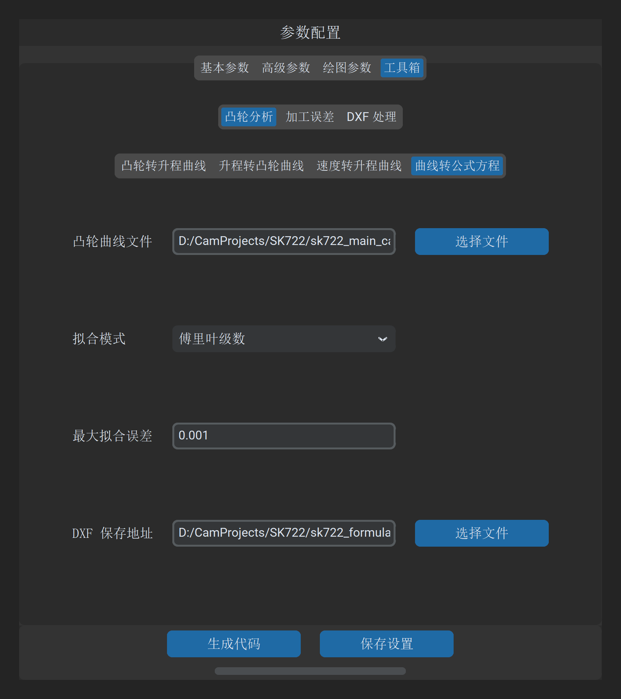

曲线转公式方程
“曲线转公式方程”工具用于将离散采样的凸轮 DXF 轮廓曲线，通过高阶数学逼近理论反求为连续、解析的数学解析方程（Analytical Formulation），并评估全轮廓残差分布。
1. 操作界面与参数布局
打开主界面并切换至 工具 -> 凸轮分析 -> 曲线转公式方程：

2. 参数定义与配置说明
| 参数项 | 字段标识 | 推荐设置 | 详细说明与工程含义 |
|---|---|---|---|
| 凸轮曲线文件 | fit_formula_file_path |
必填 | 待拟合的闭合或开放凸轮 DXF 轮廓文件路径 |
| 拟合模式 | fit_formula_mode |
傅里叶级数 | • 傅里叶级数（Fourier）：适用于全周闭合周期凸轮轮廓； • 多项式（Polynomial）：适用于非闭合曲线段或局部分段轮廓 |
| 最大拟合误差 | fit_formula_accuracy |
0.001 |
允许的最大逼近残差公差（单位：）。系统将根据该容差自适应确定阶数 |
3. 数学拟合原理与适用模型
3.1 傅里叶级数拟合（推荐模式）
对于周期为 的闭合外凸轮轮廓，其极径 天然具备周期对称性。系统展开为有限阶三角级数形式：
- 数学优势：天然满足周向首尾（ 与 ）的绝对闭合与 无穷阶导数平滑性，彻底消除接刀微观突变；
- 阶数选择：对于普通偏心凸轮或两凸台凸轮， 即可收敛至 精度以内；对于多突起凸轮，软件自适应提升展开阶数直至满足最大拟合误差。
3.2 最小二乘多项式拟合
对于局部分段曲线或行程开区间凸轮，采用最小二乘法进行正交多项式逼近：
4. 输出成果与工程应用
点击 生成公式方程数据 后，系统将产出以下成果：
- 数学解析文本（
*.txt）：列出基项系数、各项幅值相位以及最终判定最大绝对误差； - 数控宏程序 / PLC 算法移植：工程师可直接将生成的傅里叶或多项式系数代入数控系统底层（如西门子宏程序 R 参数循环、倍福 TwinCAT PLC 运动控制内核），无需在控制器中存储数十万行冗长离散点代码，极大地节省控制器内存并提高计算执行效率。